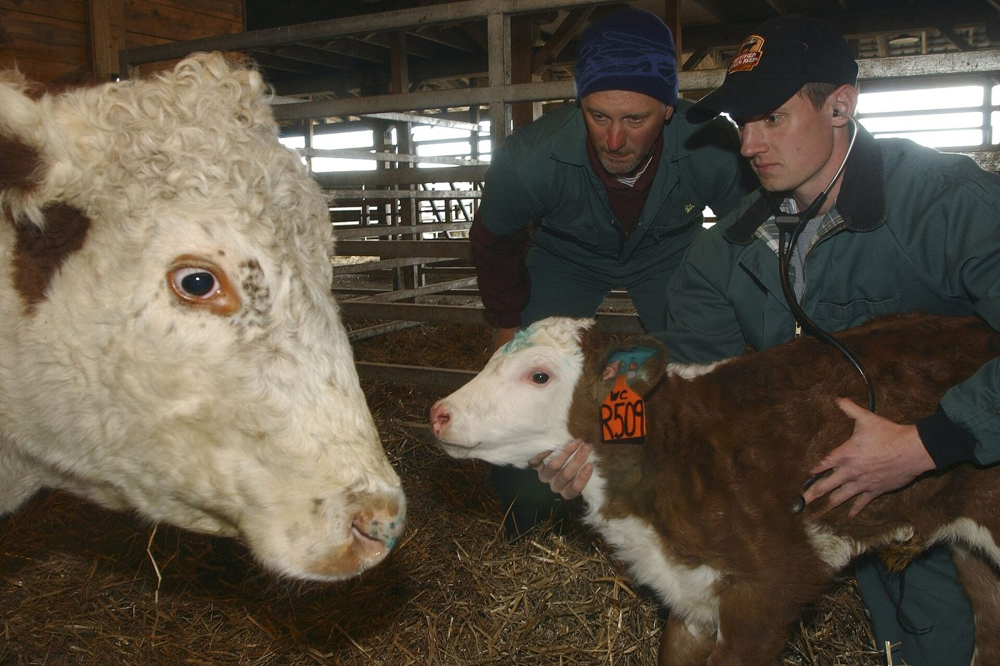
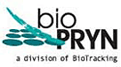

Pregnancy Testing
BioPRYN blood pregnancy testing detects open cows with over 99% accuracy, starting 28 days after breeding.
Learn about pregnancy testing
BioPRYN Affiliate Lab Since 1999
Blood pregnancy testing and herd health consulting by mail from Frederic, Wisconsin, run by a working dairy and beef veterinarian. Dr. Glenn Pearson, DVM, opened the lab in 1999 as the first BioPRYN® affiliate east of the Rockies.
Ask about new client discounts
48
States served
1999
Serving herds since

Affiliate lab of BioTracking's BioPRYN program
Services
BioPRYN blood pregnancy testing detects open cows with over 99% accuracy, starting 28 days after breeding.
Learn about pregnancy testingFind and remove persistently infected (PI) animals before they cost your herd in scours, pneumonia and lost calves.
Learn about BVD PI testingJohnes, Leukosis and Mycoplasma disease monitoring, Dairy Comp 305 records consulting, and biosecurity program design.
Learn about Dr. PearsonBringing greater value to your dairy.
The lab's promise since 1999.
How it works
Step 1
Draw a blood sample from the tail vein with a new needle for each animal. See the tail bleeding how-to guide.
Step 2
Download the form that matches your samples: Cattle/Bison Pregnancy Form, Goat/Sheep Pregnancy Form, or BVD PI Test Form.
Step 3
Pack your samples and form well, and ship so they reach our lab no later than Wednesday. Full shipping instructions here.
Step 4
Samples that reach the lab by Wednesday are reported on Thursday, faxed or emailed back to your dairy. Need results sooner? Call ahead and we will arrange it.